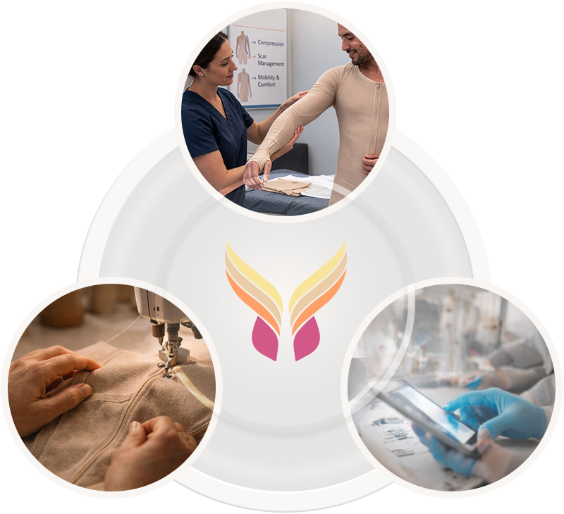

Krysalis brings together clinics, research groups, manufacturers and innovators to support and innovate burn recovery.
Krysalis exists to support people recovering from burn injury and the clinicians who care for them. Recovery is complex, personal, and long-term—and it deserves tools that are designed with intention and responsibility.
Our focus is not on novelty, but on building garments and systems that support healing in the real world, over time, and within established standards of care.
Effective recovery support requires more than any single discipline. Krysalis is built at the intersection of clinical care, garment craftsmanship, and technology—bringing these elements together to support consistency, comfort, and reliability.
Clinical insight guides what matters, craft ensures garments are wearable and durable, and technology enables precision and repeatability. Each element is necessary, but none stands alone.

The Krysalis team includes people with backgrounds in healthcare, product design, manufacturing, and technology—united by a shared respect for the realities of recovery. Our work is shaped by listening to clinicians, learning from patients’ experiences, and approaching design decisions with empathy for those who live with the outcomes every day.
Additional pages provide more information about our mission, team, partners, and ongoing work. These sections are intended to offer transparency and context for those who want to learn more.